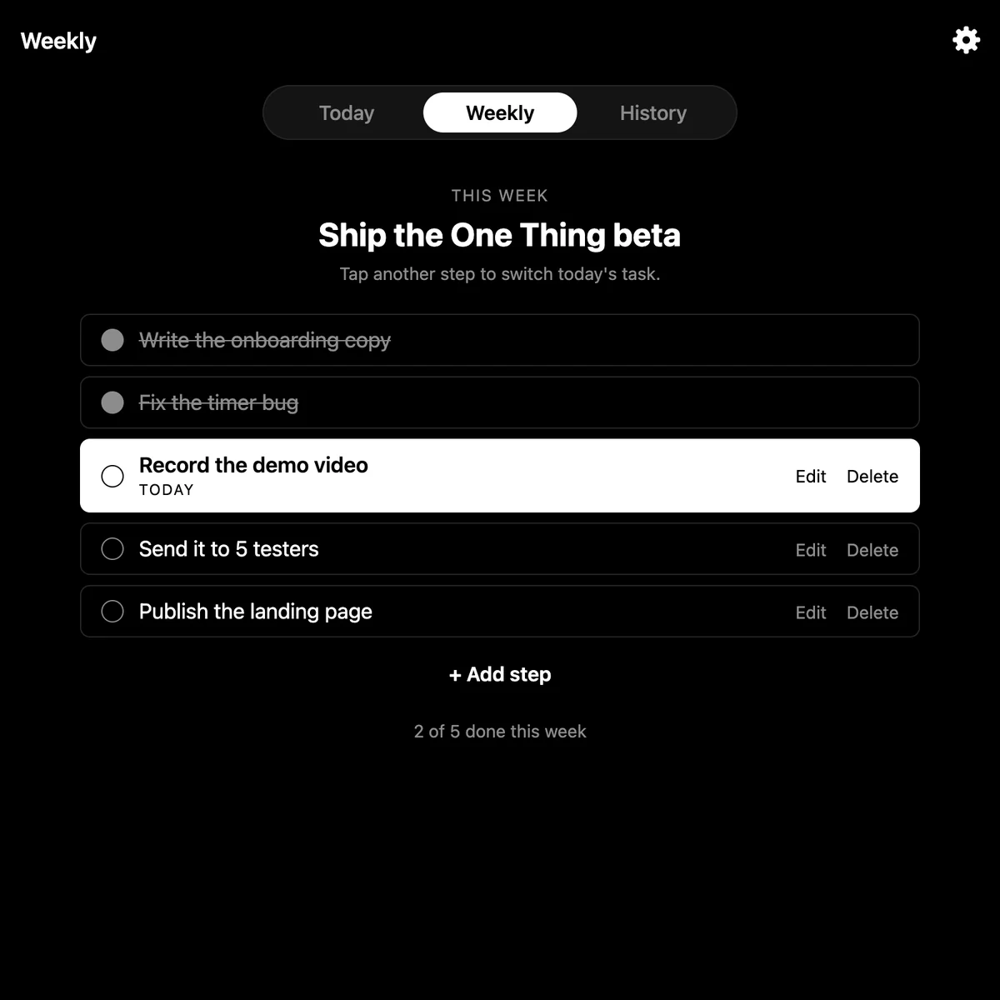
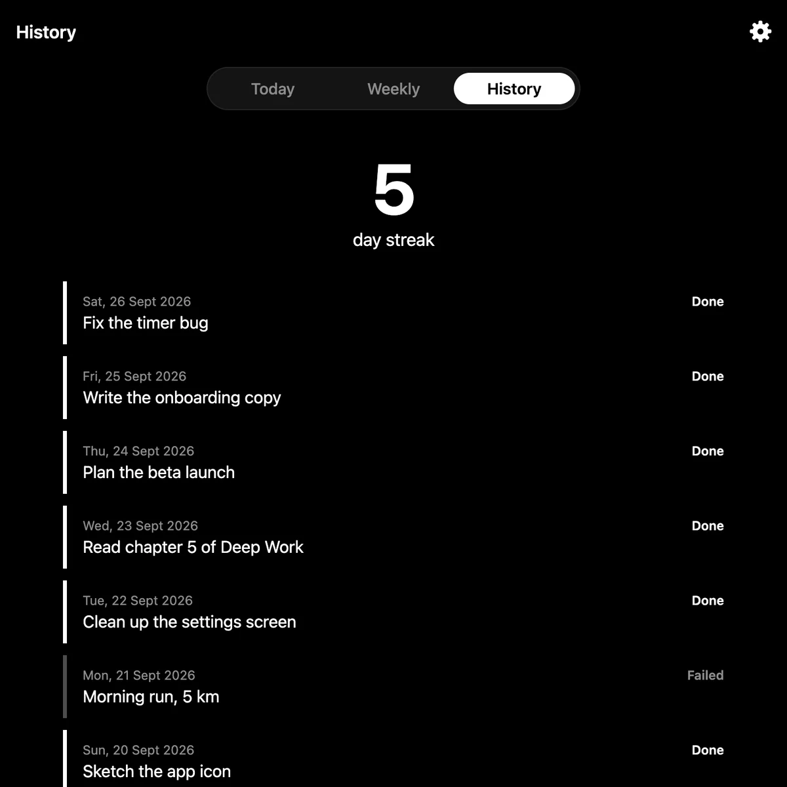

Set your goal
Pick one thing for today — typed fresh, or chosen from your weekly checklist.
Set01
A focus app that removes decision fatigue. One goal. One timer. One streak.
Three steps a day. Nothing to configure, nothing to optimise.

Pick one thing for today — typed fresh, or chosen from your weekly checklist.
A calm countdown that pauses when you wander off, and counts when you're working.

Mark it done — honestly — and watch the days add up.
No gamified badges. No ten-habit dashboards. No streak-saving tricks you didn't ask for. You choose one goal, you do it, and you tell the truth about whether you did. That's the whole app.
xattr -dr com.apple.quarantine "/Applications/One Thing.app"
This is a one-time step. You won’t need to do it again.
Get notified the moment One Thing is available on the App Store.